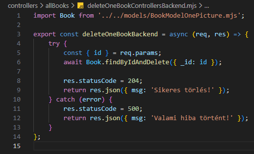

Összes könyv kezelése - deleteOneBookControllersBackend.mjs
Összes könyv kezelése - deleteOneBookControllersBackend.mjs

Ebben a részben szerkesztjük a controllers/allbooks mappában a deleteOneBookControllersBackend.mjs állományt, amelyben kidolgozzuk a CRUD Delete művelethez tartozó logikát. Ez megfelel a http DELETE metódus-hoz tartozó logikának.
-
Szerkesszük a
deleteOneBookControllersBackend.mjsállományunkat.-
import Book from '../../models/BookModelOnePicture.mjs';- aBookmodell alapértelmezett beimportálása. -
export const deleteOneBookBackend = async (req, res) => {...};- hozzuk létre és vigyük ki nevesítve ahttp DELETE metódus-hoz tartozó logikát (DeleteaCRUDműveletekből). -
try {... res.statusCode = 200; return res.json({ msg: 'Sikeres törlés!' });}- a sikeres ág a 200-ashttp hibakód-dal. -
const { id } = req.params;- szedjük ki azidtulajdonságot areq.params-ból. -
await Book.findByIdAndDelete({ _id: id });- keressük meg a könyvet és töröljük az adatbázisból. -
catch (error) { res.statusCode = 500; return res.json({ msg: 'Valami hiba történt!' }); }- a sikertelen ág a 500-ashttp hibakód-dal.
-